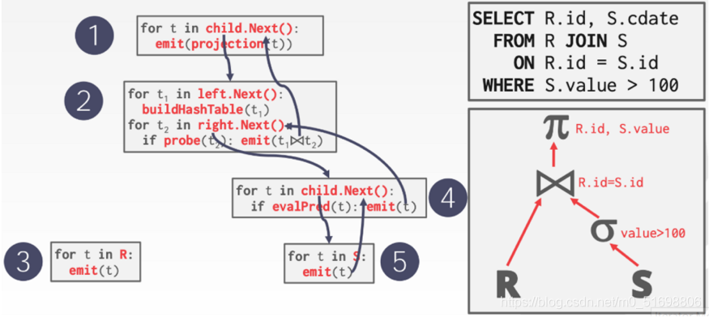
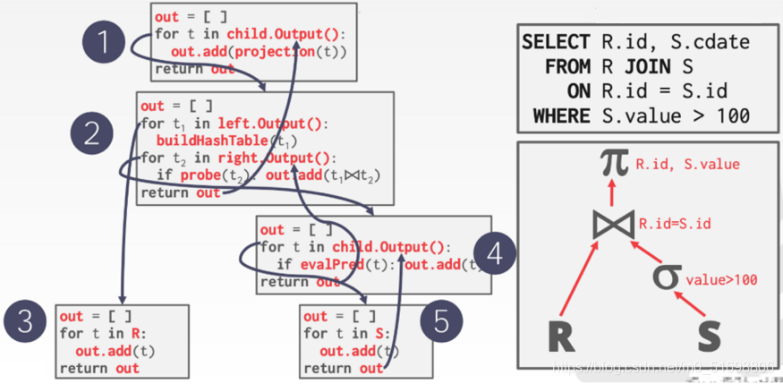

Ch04-数据库理论 之 执行模型
January 3, 2022
1. 迭代模型/火山模型（Iterator Model） #
又称 Volcano Model 或者 Pipeline Model。该计算模型将关系代数中每一种操作抽象为一个 Operator，将整个 SQL 构建成一个 Operator 树，查询树自顶向下的调用 next() 接口，数据则自底向上的被拉取处理。这种处理方式也称为拉取执行模型 (Pull Based)。

2. 物化模型（Materialization Model） #
物化模型的处理方式是每个 operator 一次处理所有的输入，处理完之后将所有结果一次性输出。物化模型更适合 OLTP 负载，这些查询每次只访问小规模的数据，只需要少量的函数调用。

3. 向量化/批处理模型（Vectorized / Batch Model） #
向量化模型 和 火山模型 类似，每个 operator 需要实现一个 next() 函数，但是每次调用 next() 函数会返回一批的元组（tuples），而不是一个元组，所以向量化模型也可称为批处理模型。向量化模型是火山模型和物化模型的折衷。
向量化模型比较适合 OLAP 查询，因为其大大减少了每个 operator 的调用次数，也就简单减少了虚函数的调用。